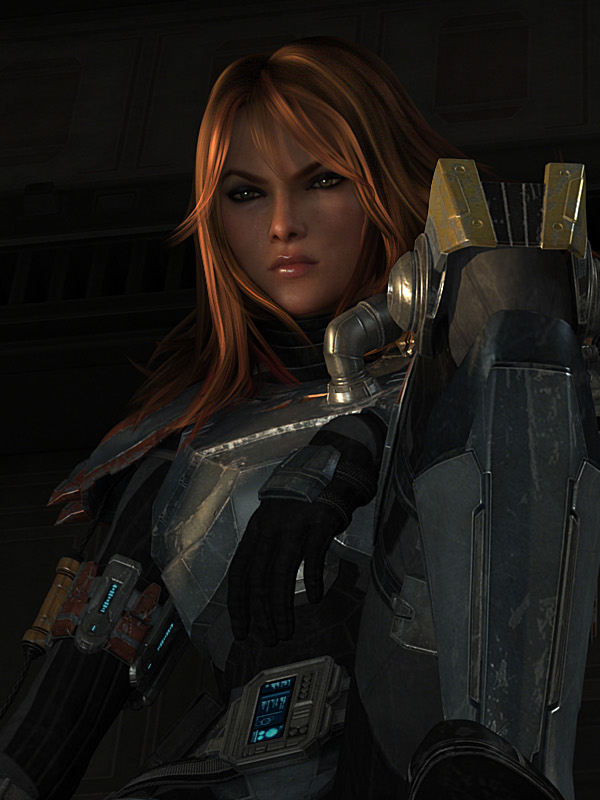

 Mandalore the Avenger, born Shae Vizla, was a female Human Mandalorian who gained notoriety during the Great Galactic War between the Galactic Republic and the resurgent Sith Empire. A ruthless bounty hunter, Vizla was often employed by the Sith Empire, who made use of her martial skills when undertaking the most risk-intensive missions. She assassinated Republic Senator Keenig, was part of the Imperial force attacking the planet of Alderaan, and launched a strike on a Republic political envoy, during which Vizla's brother was killed by the Jedi Master Aurei Eadon, causing her to develop an intense hatred for the Jedi Order. When the Empire launched an attack on the galactic capital of Coruscant, Vizla was contracted to disable the planet's defense grid, located within the Jedi Temple. In conjunction with a frontal assault by the Sith Lord Darth Malgus, Vizla infiltrated the Temple, proceeding to kill several members of the Temple Security Force. She successfully completed her mission to disable the defense grid, allowing Darth Angral's Sith armada to strike at Coruscant, and when the attack was over, utilized her jetpack to fly away from the Temple.
During the Cold War Vizla retired from Imperial service and settled with her clan on Rishi, cooperating with the Nova Blades pirates to maintain civil relations in Raider's Cove. When the Nova Blades aligned with the Order of Revan, Vizla, nicknamed "Torch" by the locals, broke ties with them and settled on the Tracyn Island to stay clear of the Revanites. Approached by an individual looking for intel on Revanites, Vizla challenged the intruder in combat and only provided the information after she was defeated in a sparring match. Refusing to let her clan join the all-out war, Vizla nevertheless traveled to Yavin IV to join in a fight against reborn Revan himself.